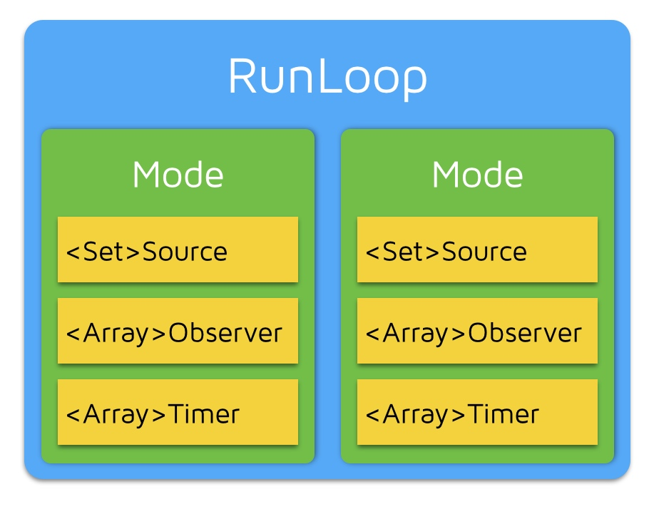
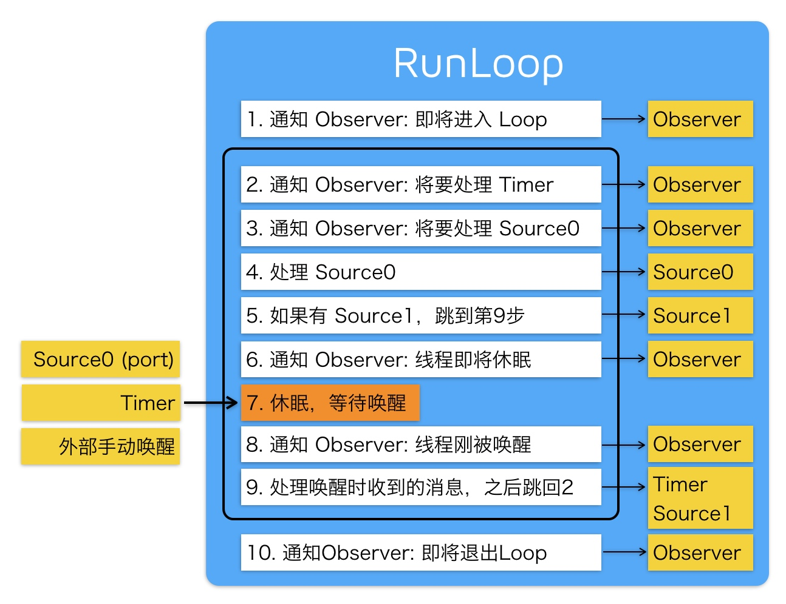

官方文档
深入理解 RunLoop
这篇文章写得非常好，推荐反复阅读。
RunLoop 相关类和关系图：

一个 RunLoop 包含若干个 Mode，每个 Mode 又包含若干个 Source/Timer/Observer 。每次调用 RunLoop 的主函数时，只能指定其中一个 Mode，这个Mode被称作 CurrentMode 。如果需要切换 Mode ，只能退出 Loop，再重新指定一个 Mode 进入。这样做主要是为了分隔开不同组的 Source/Timer/Observer ，让其互不影响。
RunLoop 通知 Observers 的流程：

RunLoop 的应用：
- AutoreleasePool ，苹果在主线程的 RunLoop 里注册了两个 Observer ，其回调都是
_wrapRunLoopWithAutoreleasePoolHandler()。第一个 Observer 监听 Entry ，调用_objc_autoreleasePoolPush()创建 AutoreleasePool ， order 是 -2147483647 ，优先级最高，这样可以在其它回调之前就进行创建 AutoreleasePool 。第二个 Observer 监听了 BeforeWaiting 和 Exit ， BeforeWaiting 时调用_objc_autoreleasePoolPop()来退出旧的 AutoreleasePool ，然后调用_objc_autoreleasePoolPush()来创建新的 AutoreleasePool ，给下一轮使用。而在 Exit 时也会调用_objc_autoreleasePoolPop()来退出 AutoreleasePool ， Observer 的优先级是 2147483647 ，优先级最低，确保在最后进行处理； - 事件响应，注册了一个基于 mach port 的 Source1 来接收系统事件，流程：IOKit.framework 生成 IOHIDEvent 事件 → SpringBoard 接收 → mach port 转发给 App → 触发 Source1 回调 →
_UIApplicationHandleEventQueue()进行分发。包括点击事件/屏幕旋转等； - 界面更新，在操作 UI 时，比如更新
frame，对UIView/CALayer视图相关的属性进行操作，或者手动调用setNeedsLayout/setNeedsDisplay方法后，系统会将记录这个UIView/CALayer，然后通过监听 BeforeWaiting 和 Exit 事件，执行_ZN2CA11Transaction17observer_callbackEP19__CFRunLoopObservermPv()，在这里面对所有待处理的UIView/CALayer进行绘制，更新界面； NSTimer回调，NSTimer其实是CFRunLoopTimerRef的桥接，NSTimer注册到 RunLoop 后， RunLoop 会持有这个NSTimer，直到invalidate或者方法执行完毕。所以如果NSTimer的repeat为YES及和强引用target时，会导致NSTimer和target无法释放。且如果 RunLoop 切换了 mode ，而对应的NSTimer没有添加到 commonMode ，那么NSTimer就不会执行；NSObject调用performSelector:afterDelay:后，内部会创建一个Timer添加到当前线程的 RunLoop 中，如果说当前线程没有 RunLoop ，那么这个方法就会失效。performSelector:onThread:则可以指定对应的线程；- 通过 GCD 的
dispatch_async(dispatch_get_main_queue(), block)切换到主队列执行block时， libDispatch 会向主线程 RunLoop 发送消息，唤醒 RunLoop ，然后从消息中获取和执行block。
关于线程保活：
线程在执行完任务后就会退出和销毁，通过创建 RunLoop 和添加 Timer/Observer/Source 到 RunLoop 中，使得线程不退出，这样可以在该线程中接收和处理消息。比较经典的是 AFNetworking 2.0 中的做法：
+ (NSThread *)networkRequestThread {
static NSThread *_networkRequestThread = nil;
static dispatch_once_t oncePredicate;
dispatch_once(&oncePredicate, ^{
_networkRequestThread = [[NSThread alloc] initWithTarget:self selector:@selector(networkRequestThreadEntryPoint:) object:nil];
[_networkRequestThread start];
});
return _networkRequestThread;
}
+ (void)networkRequestThreadEntryPoint:(id)__unused object {
@autoreleasepool {
[[NSThread currentThread] setName:@"AFNetworking"];
// 在当前线程创建 RunLoop
NSRunLoop *runLoop = [NSRunLoop currentRunLoop];
// 添加一个 NSMachPort ，防止 RunLoop 退出
[runLoop addPort:[NSMachPort port] forMode:NSDefaultRunLoopMode];
// 启动 RunLoop
[runLoop run];
}
}
Texture 也依赖 RunLoop 的机制，将耗时的不需要在主线程进行的操作放到后台线程中进行，然后添加一个 Observer 到 RunLoop 中，监听了 kCFRunLoopBeforeWaiting 和 kCFRunLoopExit 事件，在 RunLoop 休眠前在主线程提交相关事务，对 UI 进行修改。相关实现：
Texture/_ASAsyncTransactionGroup.mm at master · TextureGroup/Texture
流程代码：
{
/// 1. 通知Observers，即将进入RunLoop
/// 此处有Observer会创建AutoreleasePool: _objc_autoreleasePoolPush();
__CFRUNLOOP_IS_CALLING_OUT_TO_AN_OBSERVER_CALLBACK_FUNCTION__(kCFRunLoopEntry);
do {
/// 2. 通知 Observers: 即将触发 Timer 回调。
__CFRUNLOOP_IS_CALLING_OUT_TO_AN_OBSERVER_CALLBACK_FUNCTION__(kCFRunLoopBeforeTimers);
/// 3. 通知 Observers: 即将触发 Source (非基于port的,Source0) 回调。
__CFRUNLOOP_IS_CALLING_OUT_TO_AN_OBSERVER_CALLBACK_FUNCTION__(kCFRunLoopBeforeSources);
__CFRUNLOOP_IS_CALLING_OUT_TO_A_BLOCK__(block);
/// 4. 触发 Source0 (非基于port的) 回调。
__CFRUNLOOP_IS_CALLING_OUT_TO_A_SOURCE0_PERFORM_FUNCTION__(source0);
__CFRUNLOOP_IS_CALLING_OUT_TO_A_BLOCK__(block);
/// 6. 通知Observers，即将进入休眠
/// 此处有Observer释放并新建AutoreleasePool: _objc_autoreleasePoolPop(); _objc_autoreleasePoolPush();
__CFRUNLOOP_IS_CALLING_OUT_TO_AN_OBSERVER_CALLBACK_FUNCTION__(kCFRunLoopBeforeWaiting);
/// 7. sleep to wait msg.
mach_msg() -> mach_msg_trap();
/// 8. 通知Observers，线程被唤醒
__CFRUNLOOP_IS_CALLING_OUT_TO_AN_OBSERVER_CALLBACK_FUNCTION__(kCFRunLoopAfterWaiting);
/// 9. 如果是被Timer唤醒的，回调Timer
__CFRUNLOOP_IS_CALLING_OUT_TO_A_TIMER_CALLBACK_FUNCTION__(timer);
/// 9. 如果是被dispatch唤醒的，执行所有调用 dispatch_async 等方法放入main queue 的 block
__CFRUNLOOP_IS_SERVICING_THE_MAIN_DISPATCH_QUEUE__(dispatched_block);
/// 9. 如果如果Runloop是被 Source1 (基于port的) 的事件唤醒了，处理这个事件
__CFRUNLOOP_IS_CALLING_OUT_TO_A_SOURCE1_PERFORM_FUNCTION__(source1);
} while (...);
/// 10. 通知Observers，即将退出RunLoop
/// 此处有Observer释放AutoreleasePool: _objc_autoreleasePoolPop();
__CFRUNLOOP_IS_CALLING_OUT_TO_AN_OBSERVER_CALLBACK_FUNCTION__(kCFRunLoopExit);
}
详细的代码：
/// 用DefaultMode启动
void CFRunLoopRun(void) {
CFRunLoopRunSpecific(CFRunLoopGetCurrent(), kCFRunLoopDefaultMode, 1.0e10, false);
}
/// 用指定的Mode启动，允许设置RunLoop超时时间
int CFRunLoopRunInMode(CFStringRef modeName, CFTimeInterval seconds, Boolean stopAfterHandle) {
return CFRunLoopRunSpecific(CFRunLoopGetCurrent(), modeName, seconds, returnAfterSourceHandled);
}
/// RunLoop的实现
int CFRunLoopRunSpecific(runloop, modeName, seconds, stopAfterHandle) {
/// 首先根据modeName找到对应mode
CFRunLoopModeRef currentMode = __CFRunLoopFindMode(runloop, modeName, false);
/// 如果mode里没有source/timer/observer, 直接返回。
if (__CFRunLoopModeIsEmpty(currentMode)) return;
/// 1. 通知 Observers: RunLoop 即将进入 loop。
__CFRunLoopDoObservers(runloop, currentMode, kCFRunLoopEntry);
/// 内部函数，进入loop
__CFRunLoopRun(runloop, currentMode, seconds, returnAfterSourceHandled) {
Boolean sourceHandledThisLoop = NO;
int retVal = 0;
do {
/// 2. 通知 Observers: RunLoop 即将触发 Timer 回调。
__CFRunLoopDoObservers(runloop, currentMode, kCFRunLoopBeforeTimers);
/// 3. 通知 Observers: RunLoop 即将触发 Source0 (非port) 回调。
__CFRunLoopDoObservers(runloop, currentMode, kCFRunLoopBeforeSources);
/// 执行被加入的block
__CFRunLoopDoBlocks(runloop, currentMode);
/// 4. RunLoop 触发 Source0 (非port) 回调。
sourceHandledThisLoop = __CFRunLoopDoSources0(runloop, currentMode, stopAfterHandle);
/// 执行被加入的block
__CFRunLoopDoBlocks(runloop, currentMode);
/// 5. 如果有 Source1 (基于port) 处于 ready 状态，直接处理这个 Source1 然后跳转去处理消息。
if (__Source0DidDispatchPortLastTime) {
Boolean hasMsg = __CFRunLoopServiceMachPort(dispatchPort, &msg)
if (hasMsg) goto handle_msg;
}
/// 通知 Observers: RunLoop 的线程即将进入休眠(sleep)。
if (!sourceHandledThisLoop) {
__CFRunLoopDoObservers(runloop, currentMode, kCFRunLoopBeforeWaiting);
}
/// 7. 调用 mach_msg 等待接受 mach_port 的消息。线程将进入休眠, 直到被下面某一个事件唤醒。
/// • 一个基于 port 的Source 的事件。
/// • 一个 Timer 到时间了
/// • RunLoop 自身的超时时间到了
/// • 被其他什么调用者手动唤醒
__CFRunLoopServiceMachPort(waitSet, &msg, sizeof(msg_buffer), &livePort) {
mach_msg(msg, MACH_RCV_MSG, port); // thread wait for receive msg
}
/// 8. 通知 Observers: RunLoop 的线程刚刚被唤醒了。
__CFRunLoopDoObservers(runloop, currentMode, kCFRunLoopAfterWaiting);
/// 收到消息，处理消息。
handle_msg:
/// 9.1 如果一个 Timer 到时间了，触发这个Timer的回调。
if (msg_is_timer) {
__CFRunLoopDoTimers(runloop, currentMode, mach_absolute_time())
}
/// 9.2 如果有dispatch到main_queue的block，执行block。
else if (msg_is_dispatch) {
__CFRUNLOOP_IS_SERVICING_THE_MAIN_DISPATCH_QUEUE__(msg);
}
/// 9.3 如果一个 Source1 (基于port) 发出事件了，处理这个事件
else {
CFRunLoopSourceRef source1 = __CFRunLoopModeFindSourceForMachPort(runloop, currentMode, livePort);
sourceHandledThisLoop = __CFRunLoopDoSource1(runloop, currentMode, source1, msg);
if (sourceHandledThisLoop) {
mach_msg(reply, MACH_SEND_MSG, reply);
}
}
/// 执行加入到Loop的block
__CFRunLoopDoBlocks(runloop, currentMode);
if (sourceHandledThisLoop && stopAfterHandle) {
/// 进入loop时参数说处理完事件就返回。
retVal = kCFRunLoopRunHandledSource;
} else if (timeout) {
/// 超出传入参数标记的超时时间了
retVal = kCFRunLoopRunTimedOut;
} else if (__CFRunLoopIsStopped(runloop)) {
/// 被外部调用者强制停止了
retVal = kCFRunLoopRunStopped;
} else if (__CFRunLoopModeIsEmpty(runloop, currentMode)) {
/// source/timer/observer一个都没有了
retVal = kCFRunLoopRunFinished;
}
/// 如果没超时，mode里没空，loop也没被停止，那继续loop。
} while (retVal == 0);
}
/// 10. 通知 Observers: RunLoop 即将退出。
__CFRunLoopDoObservers(rl, currentMode, kCFRunLoopExit);
}
NSRunLoop Internals
mikeash.com: Friday Q&A 2010-01-01: NSRunLoop Internals
NSRunLoop 伪代码。
run 方法的实现非常简单，先判断是否有 Source 或者 Timer ，如果没有，就直接退出：
- (void)run
{
while([self hasSourcesOrTimers])
[self runMode: NSDefaultRunLoopMode beforeDate: [NSDate distantFuture]];
}
- (void)runUntilDate: (NSDate *)limitDate
{
while([self hasSourcesOrTimers])
{
[self runMode: NSDefaultRunLoopMode beforeDate: limitDate];
// check limitDate at the end of the loop to ensure that
// the runloop always runs at least once
if([limitDate timeIntervalSinceNow] < 0)
break;
}
}
NSRunLoop 提供了添加 Source 的方法：
- (void)addPort: (NSPort *)aPort forMode: (NSString *)mode
{
NSMutableSet *sourcesSet = [_inputSources objectForKey: mode];
if(!sourcesSet)
{
// 如果当前 mode 还没有创建关于 source 的 NSMutableSet ，就动态创建一个
sourcesSet = [NSMutableSet set];
[_inputSources setObject: sourcesSet forKey: mode];
}
[sourcesSet addObject: aPort];
}
同时也有对应的移除 Source 方法：
- (void)removePort: (NSPort *)aPort forMode: (NSString *)mode
{
NSMutableSet *sourcesSet = [_inputSources objectForKey: mode];
[sourcesSet removeObject: aPort];
// 如果 source 的 NSMutableSet 为空，则移除
if(![sourcesSet count])
[_inputSources removeObjectForKey: mode];
}
- (BOOL)runMode: (NSString *)mode beforeDate: (NSDate *)limitDate
{
// 如果没有 Source 或者 Timer ，就直接退出
if(![self hasSourcesOrTimersForMode: mode])
return NO;
// with timer support, this code has to loop until an input
// source fires
//
BOOL didFireInputSource = NO;
while(!didFireInputSource)
{
fd_set fdset;
FD_ZERO(&fdset);
for(inputSource in [_inputSources objectForKey: mode])
FD_SET([inputSource fileDescriptor], &fdset);
// 根据 limitDate 获取 timeout
NSTimeInterval timeout = [limitDate timeIntervalSinceNow];
// 选择 timeout 和 timerSources 中最小值
for(timer in [_timerSources objectForKey: mode])
timeout = MIN(timeout, [[timer fireDate] timeIntervalSinceNow]);
select(fdset, timeout);
// 处理 Source
for(inputSource in [[[_inputSources objectForKey: mode] copy] autorelease])
if(FD_ISSET([inputSource fileDescrptor], &fdset))
{
didFireInputSource = YES;
[inputSource fileDescriptorIsReady];
}
// 处理 Timer ，根据 fireDate 判断是否要调用 Timer 的 fire 方法，执行对应的事件
// 根据 repeat 是否为 YES 判断要不要移除 Timer
for(timer in [[[_timerSources objectForKey: mode] copy] autorelease])
if([[timer fireDate] timeIntervalSinceNow] <= 0)
[timer fire];
// 如果已经超出了 limitDate 的时间戳，就立即返回
if([limitDate timeIntervalSinceNow] < 0)
break;
}
return YES;
}